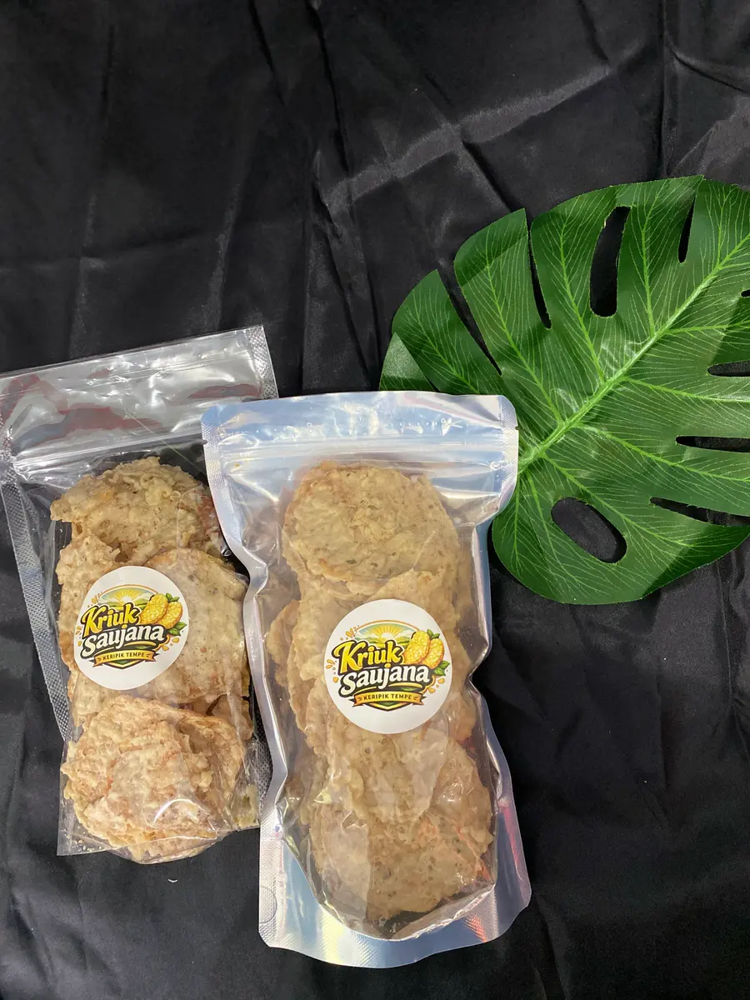

Bagi penikmat kopi di Indonesia maupun mancanegara, nama Dampit telah lama bersanding dengan kebesaran komoditas kopi Nusantara. Terletak di lereng selatan Gunung Semeru, Jawa Timur, daerah ini dikenal sebagai penghasil salah satu varietas kopi Robusta terbaik dunia (*Fine Robusta*). Kopi Dampit bahkan telah menjadi komoditas ekspor andalan yang memasok kebutuhan roastery prestisius di Eropa dan Asia.
Namun, apa sesungguhnya yang membedakan kopi Robusta Dampit dari jenis kopi lainnya di Indonesia? Mengapa para barista dan kedai kopi modern kini kembali jatuh hati pada karakter pekatnya yang menawan? Melalui artikel ini, kita akan menyelami lanskap agroklimat Semeru, rahasia di balik pengolahan petik merah brand lokal Coffee Digital, hingga panduan menyeduh cangkir kopi sempurna di meja Anda.
1. Pesona Kopi Lereng Semeru Dampit Malang Selatan
1.1 Letak Geografis dan Ketinggian Perkebunan
Kecamatan Dampit berada pada rentang ketinggian antara 600 hingga 900 meter di atas permukaan laut (mdpl). Bagi tanaman kopi jenis Robusta (*Coffea canephora*), ketinggian ini tergolong istimewa. Umumnya, Robusta tumbuh subur di dataran rendah di bawah 500 mdpl. Ketinggian yang lebih tinggi di lereng Semeru membuat suhu harian cenderung lebih sejuk, sehingga proses pematangan buah ceri kopi berlangsung lebih lambat dan bertahap.
Tanah vulkanik hasil endapan letusan Gunung Semeru yang kaya akan unsur hara mikro dan makro menyuplai nutrisi melimpah bagi perakaran pohon kopi. Ditambah lagi dengan curah hujan yang merata dan naungan pohon peneduh alami seperti petai lamtoro dan pisang, ekosistem perkebunan Dampit menghasilkan biji kopi berdensitas tinggi dengan kandungan gula alami yang lebih terakumulasi.
1.2 Sejarah Panjang Kopi Dampit Menembus Pasar Global
Tradisi perkebunan kopi di Malang Selatan memiliki akar historis sejak era kolonial Belanda pada akhir abad ke-19. Ketika wabah karat daun (*Hemileia vastatrix*) melanda perkebunan Arabika di seantero Hindia Belanda, para pembudidaya beralih menanam Robusta yang terbukti lebih tangguh. Di tanah Dampit, Robusta menemukan rumah barunya. Sejak dekade 1980-an hingga saat ini, puluhan ribu ton biji hijau (*green beans*) Dampit dikapalkan setiap tahun melalui Pelabuhan Tanjung Perak Surabaya menuju pembeli di Italia, Jerman, Belanda, hingga Jepang.
2. Keistimewaan Profil Rasa (Tasting Notes) Robusta Dampit
2.1 Karakter Body Ekstra Tebal dan Crema Menggoda
Daya pikat utama Robusta Dampit terletak pada sensasi kekentalan di lidah (*mouthfeel/body*) yang sangat pekat dan berbobot. Berbeda dengan kopi Arabika yang cenderung bertekstur cair dan berkarakter asam sitrus cerah, Robusta Dampit menyajikan rasa mantap yang kokoh.
Ketika diekstraksi menggunakan mesin espresso maupun alat seduh manual seperti moka pot atau rok presso, Robusta Dampit menghasilkan lapisan crema berwarna cokelat keemasan yang tebal, padat, dan tahan lama. Inilah alasan mengapa para pemilik coffee shop modern kerap mengandalkan Robusta Dampit sebagai tulang punggung racikan es kopi susu kekinian: rasa kopinya tidak pernah tenggelam meski dipadukan dengan krimer, susu kental manis, maupun sirup karamel aren.
2.2 Aroma Dark Chocolate, Earthy, dan Aftertaste Karamel
Secara sensorik, cupping profile Robusta Dampit kelas teratas (*Fine Robusta*) didominasi oleh nuansa wangi cokelat pekat (*dark chocolate*), sentuhan rempah pala bersahaja (*warm spices*), serta aroma tanah basah hutan tropis (*clean earthy*). Kepahitannya bersifat bulat (*smooth bitterness*), bukan kepahitan tajam yang menusuk leher. Setelah diteguk, kopi ini meninggalkan sensasi manis karamel alami (*sweet aftertaste*) yang bertahan lama di rongga mulut.

3. Proses Petik Merah dan Standarisasi Fine Robusta
3.1 Sortasi Biji Kopi Matang Optimal (Defect Rendah <2%)
Stigma masa lalu yang menganggap kopi Robusta berasa gosong atau berbau ban terbakar sesungguhnya disebabkan oleh pola panen serampangan (*petik asalan*) di mana buah mentah hijau, busuk, dan ranting tercampur menjadi satu.
Brand Coffee Digital membalik paradigma tersebut dengan menerapkan disiplin 100% Petik Merah (*Selective Red Picking*). Hanya ceri kopi yang benar-benar merah ranum matang di pohon yang dipetik oleh para petani mitra. Kadar gula fruktosa pada ceri merah telah matang sempurna, mencegah rasa sepat mentah (*astringent*) dan meminimalkan cacat mutu (*defect*) hingga di bawah 2%.
3.2 Profil Roasting Medium-to-Dark untuk Ekstraksi Maksimal
Tahap pemanggangan (*roasting*) dilakukan dengan mesin modern bersensor suhu digital presisi. Coffee Digital menerapkan kurva sangrai Medium-Dark Roast. Pada level ini, minyak atsiri di dalam sel biji kopi bermigrasi ke permukaan secara optimal, memunculkan aroma semerbak manis karamel tanpa membakar struktur biji menjadi abu. Biji kopi kemudian segera dikemas dalam standing pouch berlapisan aluminium foil tebal yang dipersenjatai One-Way Degassing Valve. Katup satu arah ini membuang gas karbon dioksida alami pasca-sangrai sekaligus mengunci rapat oksigen luar agar aroma kopi tetap prima hingga 12 bulan.
4. Panduan Menyeduh Kopi Robusta Dampit di Rumah
Menikmati kelezatan Robusta Dampit sangat mudah dan fleksibel. Anda tidak memerlukan mesin mahal untuk menyeduh cangkir kopi yang nikmat. Berikut 3 metode seduh paling populer:
- Kopi Tubruk Tradisional: Gunakan 10-12 gram bubuk halus Robusta Dampit, seduh dengan 150 ml air panas bersuhu 90°C–93°C. Aduk perlahan dan diamkan selama 4 menit agar ampas mengendap sempurna. Anda akan merasakan kepekatan cokelat murni yang sangat menenangkan.
- Vietnam Drip (Kopi Susu Dingin): Tuangkan 20 ml susu kental manis di dasar gelas. Masukkan 15 gram bubuk kopi medium-dark ke dalam cangkir drip, lalu ratakan tamper. Tuang 100 ml air mendidih dan biarkan menetes perlahan. Tambahkan es batu untuk menikmati es kopi susu otentik bercita rasa bold legendaris.
- French Press: Menggunakan bubuk gilingan kasar (*coarse*), rendam kopi dengan air panas selama 4 menit sebelum menekan plunger. Metode ini menghasilkan seduhan kopi hitam berbadan tebal tanpa ampas kasar.
5. Seri Varian Kopi Murni Coffee Digital
Untuk memenuhi selera beragam penikmat kopi, Coffee Digital menghadirkan 3 kurasi varian kemasan 250 gram:
- Grade Robusta Dampit (Rp 26.000): Pilihan ekonomis untuk konsumsi harian di rumah, warung, maupun kantor dengan rasa mantap bulat.
- Premium Robusta Dampit Petik Merah (Rp 37.000): Seleksi ceri merah murni dengan aroma dark chocolate karamel dan crema ekstra melimpah.
- Premium Mix Specialty Blend (Rp 42.000): Perkawinan istimewa antara ketebalan Robusta Semeru dengan keanggunan aroma floral buah Arabika Nusantara pilihan.
6. Kesimpulan
Kopi Robusta Dampit Semeru adalah bukti nyata bahwa kopi Robusta Indonesia memiliki keanggunan cita rasa kelas dunia ketika dirawat dengan dedikasi tinggi sejak pemetikan buah ceri hingga pengemasan higienis. Dengan menyeruput secangkir Coffee Digital, Anda tidak hanya menikmati kenikmatan energi harian yang mantap, tetapi juga menghargai jerih payah para petani kopi lokal yang menjaga kelestarian lereng Gunung Semeru.